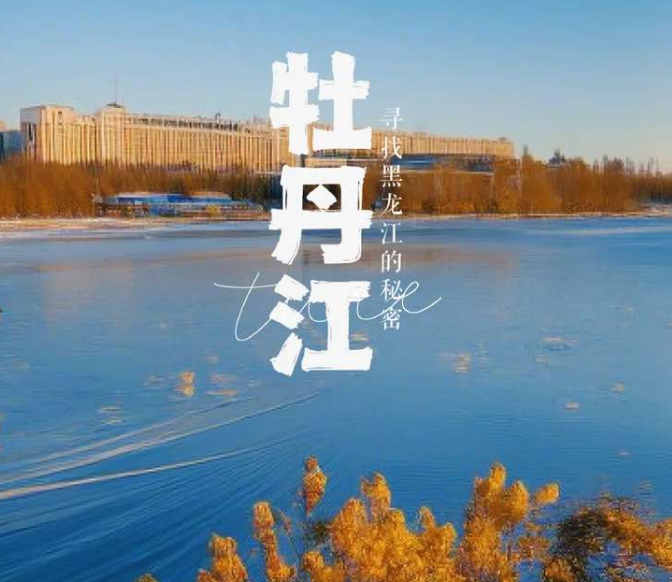
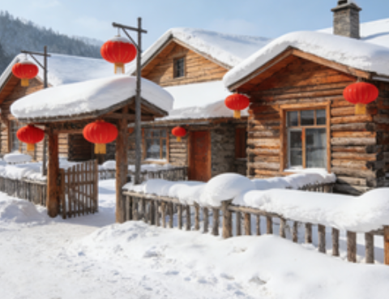
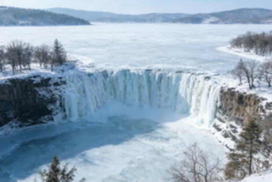
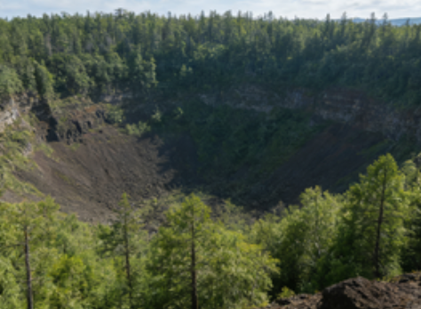
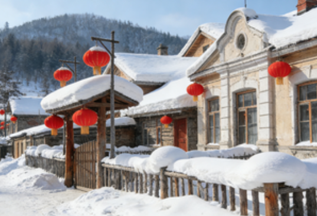
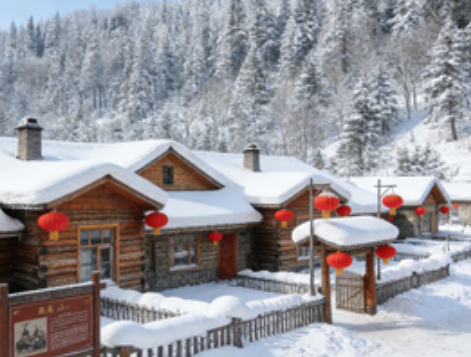
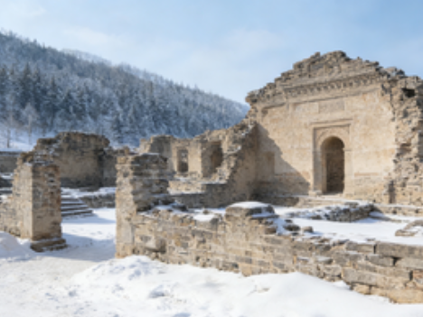

Located in southeastern Heilongjiang Province, Mudanjiang is named after the Mudan River, one of the largest tributaries of the Songhua River. As an important tourist city in Heilongjiang, it is home to renowned attractions such as Jingpo Lake, China Snow Town, and the Volcanic Crater Forest Park, earning the titles of "China's Excellent Tourist City" and "China's Snow City."
Situated at the center of the Northeast Asia economic zone, Mudanjiang shares a 211-kilometer border with Russia and serves as a vital port city for Sino-Russian economic and trade cooperation. It is also a multicultural home to Manchu, Korean, and other ethnic groups with profound cultural heritage.
Learn MoreCore Tourism Resources

China Snow Town

Jingpo Lake

Crater Forest Park

Hengdaohezi Town

Weihushan Scenic Area

Bohai State Ruins
Mudanjiang is a year-round destination. Winter (December to February) is ideal for snow tourism at China Snow Town and ice sculptures. Summer (June to August) offers pleasant weather for exploring Jingpo Lake and the Crater Forest Park. Autumn (September to October) features stunning fall foliage. Each season brings its own unique charm to this remarkable city.
Mudanjiang is accessible by air through Mudanjiang Hailang International Airport, by high-speed rail from Harbin (approximately 1.5 hours), and by long-distance bus from major cities in Northeast China. Within the city, taxis and buses are readily available for convenient travel between attractions.
Must-try dishes include Jingpo Lake Fish Feast featuring fresh catches from the lake, Korean Cold Noodles with their signature sweet and sour broth, traditional Sticky Bean Buns, and Xiangshui Rice from Ning'an — a premium rice grown on volcanic lava fields. Don't miss the Dongning Black Fungus and Hailin Monkey Head Mushroom either!
Immerse yourself in the rich cultural tapestry of Mudanjiang. Experience Korean traditional festivals like Chuseok, learn about Manchu Shamanic rituals, explore the UNESCO-worthy Bohai State archaeological site, and witness the spectacular ice and snow sculpture art that draws artists from around the world every winter.